八、获取被感染原因
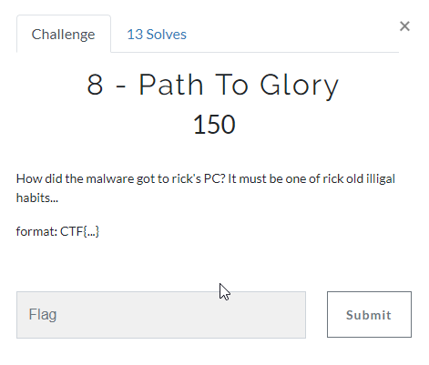
恶意程序是通过Rick And Morty进程释放的，这个进程执行的命令是执行了一个download.exe文件导致，明显是通过Torrent下载的。
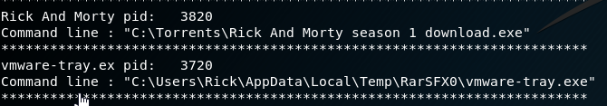
接着使用filescan去扫描与Rick And Morty相关的文件名，找到几个.torrent结尾的文件
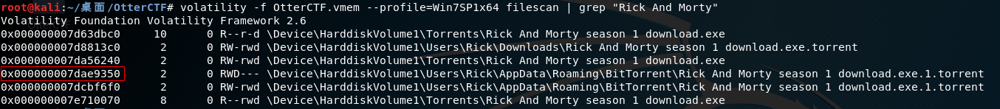
使用dumpfiles依次将文件内容dump出来，并查看其内容，最终在上图标记处的文件里找到flag。
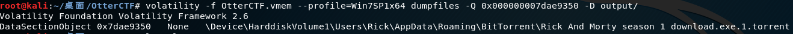
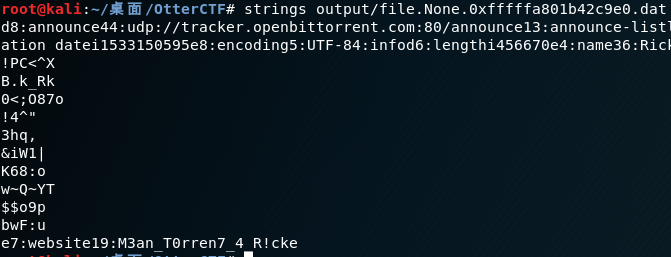
提交CTF{M3an_T0rren7_4_R!cke}出错，修改为CTF{M3an_T0rren7_4_R!ck}正确。
第八题：CTF{M3an_T0rren7_4_R!ck}
九、获取恶意程序来源
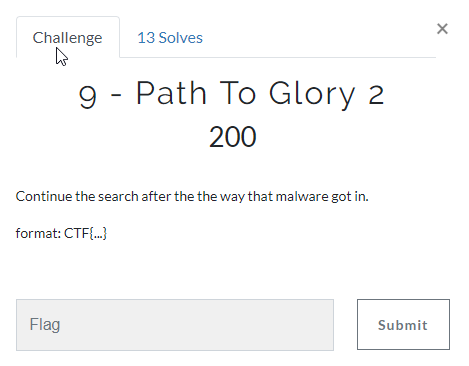
恶意程序怎么进到受害者的机器里，无外乎是通过网络，通过浏览器，通过前面的pstree可知用户打开了Chrome并打开了一些tab页，尝试查看其Chrome浏览器的浏览历史。
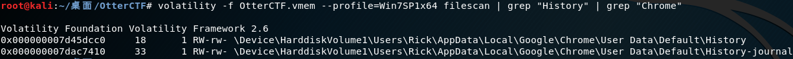
将对应的History文件dump出来，然后使用sqlitebrowser打开（kali自带）：
sqlitebrowser “dump文件”
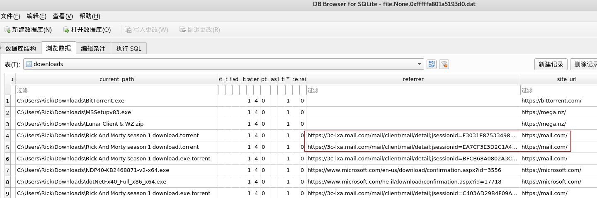
Referer里的mail地址已经无法访问，site_url里只有https://mail.com
这个地址是国外一个邮箱的域名，为了获取登陆账号，这里使用bulk_extractor（kali自带）来提取镜像文件里的email地址相关的更多信息。
bulk_extractor -o bulk_out OtterCTF.vmem
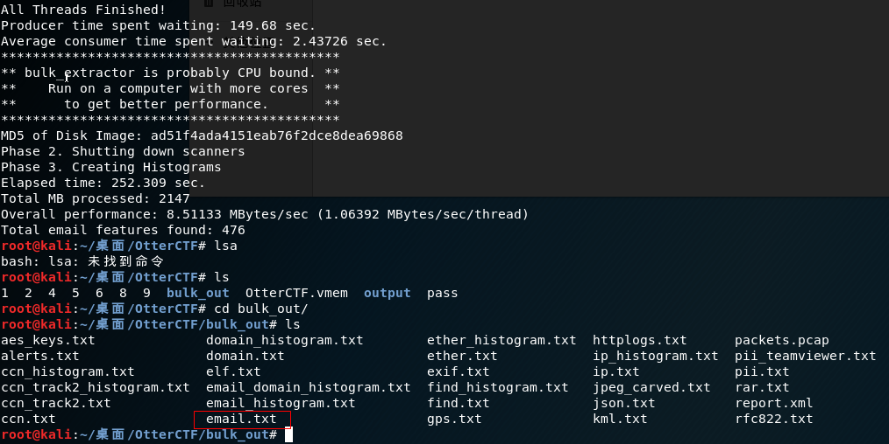
查看email.txt里的内容，可以发现账号名称：RickoPicko@mail.com
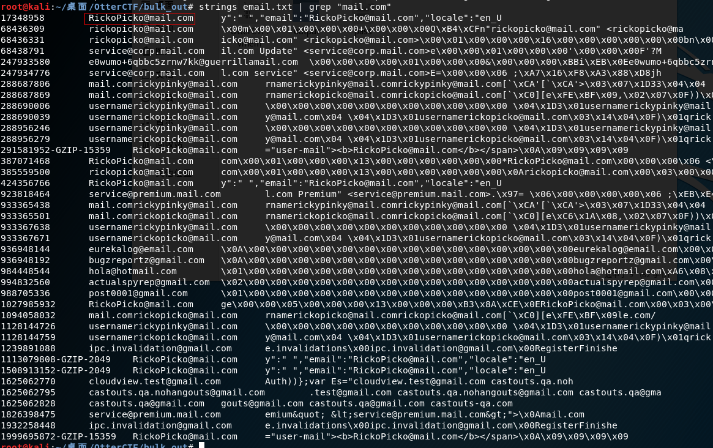
邮箱密码第六题已经告知我们为M@il_Pr0vid0rs
登陆成功，获取到本题flag。
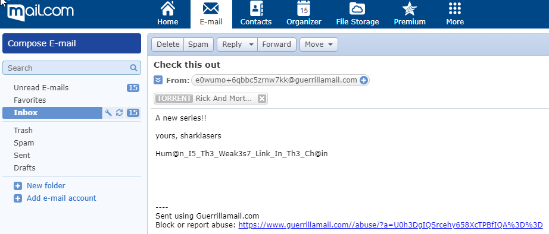
第九题：CTF{Hum@n_I5_Th3_Weak3s7_Link_In_Th3_Ch@in}
十、获取攻击者比特币钱包地址
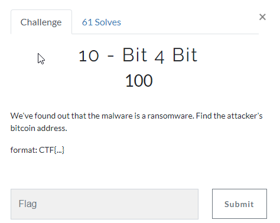
首先尝试strings 3720.dmp并指定address，wallet，bitcoin等关键字都无法得到有效地址。因为比特币钱包地址是一串没有规则的字符串，很难通过关键字搜索。
尝试使用volatility里的procdump命令将恶意程序保存为可执行程序，然后在虚拟机里执行该程序。
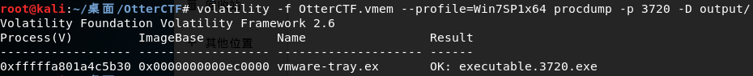
但是该程序无法正确执行。
下载CodeReflect，这个软件可以反编译.NET程序，加载上面的exe程序之后，最终在下图标记处找到比特币钱包地址：
1MmpEmebJkqXG8nQv4cjJSmxZQFVmFo63M
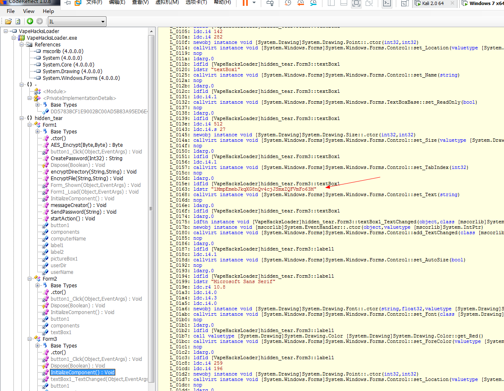
第十题：CTF{1MmpEmebJkqXG8nQv4cjJSmxZQFVmFo63M}
十一、获取勒索软件内部图片
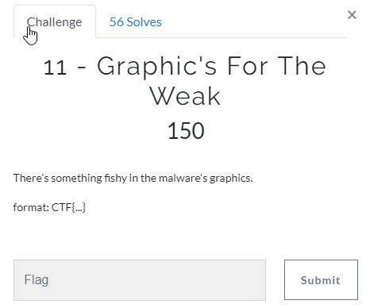
提示我们恶意程序里的图片有猫腻，尝试在CodeReflect里找资源文件并没有什么发现。
首先使用binwalk看看分离出的exe文件
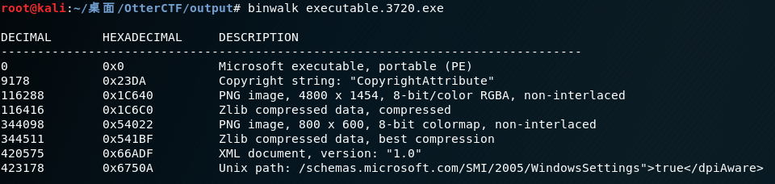
果然里面包含了图片文件，再使用foremost去分离，分离之后打开即可得到flag
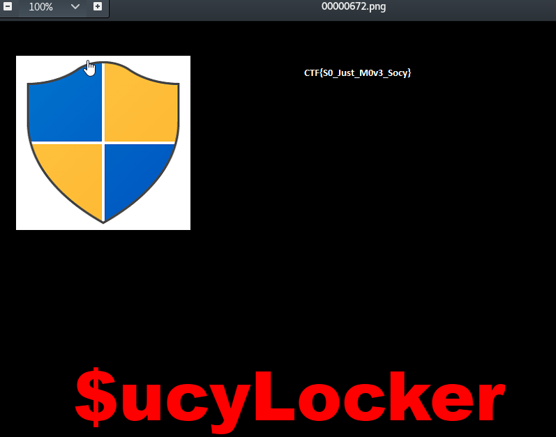
第十一题：CTF{S0_Just_M0v3_Socy}
十二、获取勒索软件使用的密钥
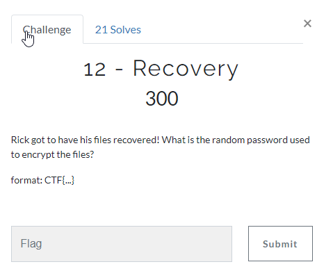
要求获取加密密钥，使用CodeReflect打开勒索软件，在反编译代码里看到一处SendPassword函数使用了加密密钥。并且是computerName-userName password的拼接。
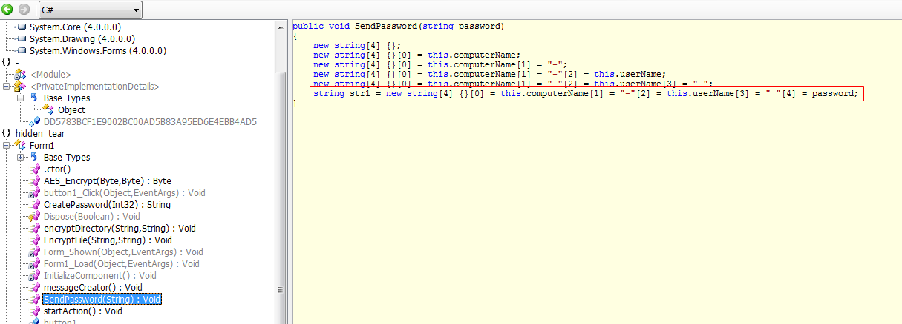
由上面解题过程可知，对应：WIN-LO6FAF3DTFE-Rick password
因此可以据此进行搜索。另外.NET默认UTF-16编码，strings命令使用el或者eb参数。
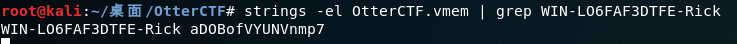
最终得到password：aDOBofVYUNVnmp7
第十二题：CTF{aDOBofVYUNVnmp7}
十三、解密文件
之前使用volatility的cmdline命令时就看到了一个奇怪的文件，该文件以.WINDOWS为后缀，符合勒索软件的命名习惯。
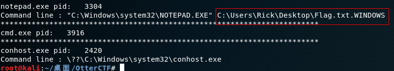
查找该文件
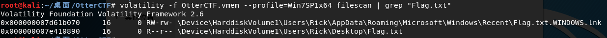
将文件dump出来发现打开后是乱码。
通过前面的分析，现在已经知道了加密密钥和反编译后的软件源码，在CodeReflect里可以看到出现了hidden_tear字样
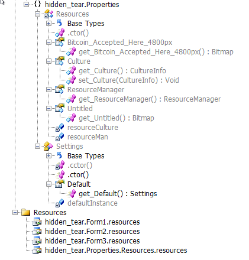
经过google，发现用于加密文件
https://github.com/goliate/hidden-tear
找到相应的解密软件
https://www.bleepingcomputer.com/download/hidden-tear-decrypter/
使用该软件时要首先将dump出来的文件里的空字节删掉，使用010editor删除即可。
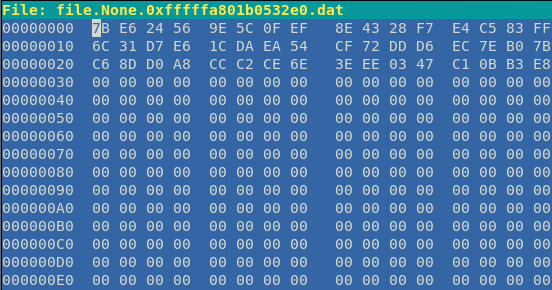
最终解密成功。
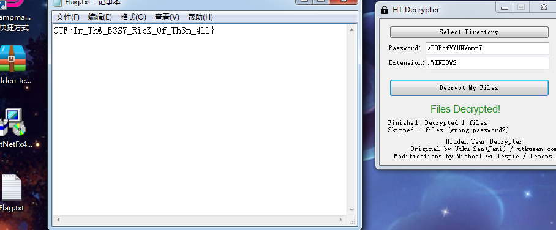
第十三题：CTF{Im_Th@_B3S7_RicK_0f_Th3m_4ll}
学到了蛮多东西，感到舒适。
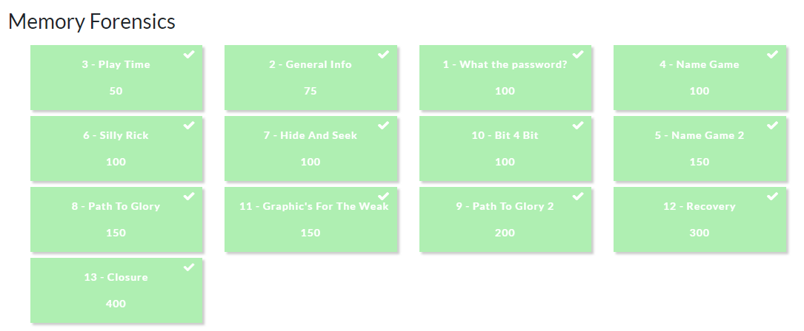